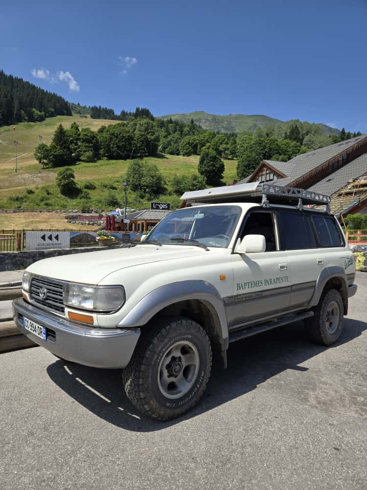
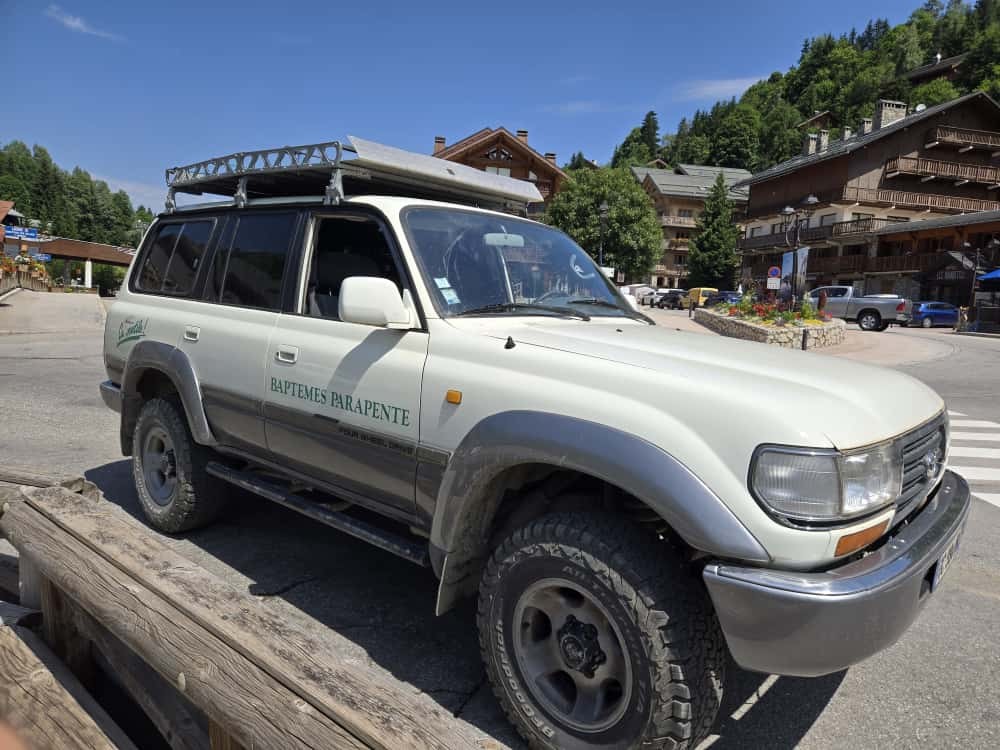

Prestations & Tarifs
Nos formules de vol varient selon la saison et vos envies.
Tous les vols sont encadrés par des pilotes diplômés d'État, matériel de sécurité fourni et transport jusqu'au décollage inclus.
Vol découverte
L'offre parfaite pour un premier vol inoubliable.
- Créneau le matin ou l'après-midi selon votre poids
- Transport et matériel de sécurité inclus
140 € / vol
En savoir plus
Vidéos en l'air avec notre GoPro : non comprise
Accessible dès 25 kg, aucune expérience requise
Le matin : rendez-vous au départ de la télécabine de Tougnette, sur le plateau de la Chaudanne.
L'après-midi : rendez-vous au parking aérien des Rhodos, à l'entrée du plateau de la Chaudanne, à proximité du rond-point.
Montée en télécabine ou voiture incluse (déduction si déjà titulaire d'un forfait pour les remontées mécaniques). Atterrissage à la Chaudanne, devant la télécabine de Saulire Express.
Vol Premium
Visitez Méribel et ses alentours
- Vol sur plusieurs vallées
- Itinéraire adapté aux meilleures conditions du jour
300 € / vol
En savoir plus
Durée du vol : environ 45 minutes
Le matin : rendez-vous au départ de la télécabine de Tougnette, sur le plateau de la Chaudanne.
L'après-midi : rendez-vous au parking aérien des Rhodos, à l'entrée du plateau de la Chaudanne, à proximité du rond-point.
Détails sur nos vols
En matinée
Vol de 900 m de dénivelé depuis le sommet de Tougnette, en conditions calmes et/ou ascendantes.
Montée en télécabine puis en télésiège (si vous êtes déjà titulaire d’un titre de transport, nous déduirons le prix de la montée du prix du vol).
Ce vol est orienté vers la promenade aérienne, en survolant les crêtes de la Cherferie en direction du Roc de Fer. La proximité du sol sur une grande partie du vol permet souvent d’observer des cervidés dans leur milieu sauvage (chamois, biches et cerfs).
Les conditions sont parfois suffisamment fortes pour « grimper » sur le Roc de Fer et traverser ensuite la vallée.
Si le vent météo est annoncé en ouest, le vol sera déplacé sur le secteur de la Saulire.
En après-midi
Vol de 900 m de dénivelé sur le secteur de l’altiport, entre la Saulire et le col de la Loze.
Souvent ascendant, ce vol offre également une belle promenade aérienne, avec possibilité de pilotage par le passager s’il le souhaite, et/ou des sensations fortes pour les plus téméraires.


Notre véhicule au lieu de rendez-vous de l’après-midi
Atterrissage commun aux deux sites
L’atterrissage se situe à côté de la gare de départ de la télécabine de Saulire Express, sur l’aire d’arrivée du stade de slalom du Corbey.
Le lieu de rendez-vous est très proche de l’entrée de la zone ludique de la Chaudanne. Un parking gratuit l’été est à proximité (vers l’entrée du tunnel).
Cliquez ici pour avoir toutes les réponses dont vous avez besoin (PDF téléchargeable)